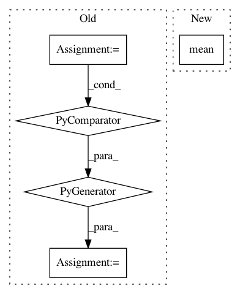

d01c5b805e49346914b3b5ace081cae8cbb2a99a,modAL/density.py,,information_density,#Any#Any#,32
Before Change
inf_density = np.zeros(shape=(X.shape[0],))
for X_idx, X_inst in enumerate(X):
inf_density[X_idx] = sum(similarity_measure(X_inst, X_j) for X_j in X)
return inf_density/X.shape[0]
After Change
similarity_mtx = 1/(1+pairwise_distances(X, X, metric=metric))
return similarity_mtx.mean(axis=1)
In pattern: SUPERPATTERN
Frequency: 3
Non-data size: 5
Instances
Project Name: modAL-python/modAL
Commit Name: d01c5b805e49346914b3b5ace081cae8cbb2a99a
Time: 2018-10-01
Author: theodore.danka@gmail.com
File Name: modAL/density.py
Class Name:
Method Name: information_density
Project Name: Scitator/catalyst
Commit Name: f4beaac559e00a3676d942dc7e8fea69efc01cfe
Time: 2020-11-30
Author: raveforlive@gmail.com
File Name: catalyst/metrics/avg_precision.py
Class Name:
Method Name: mean_avg_precision